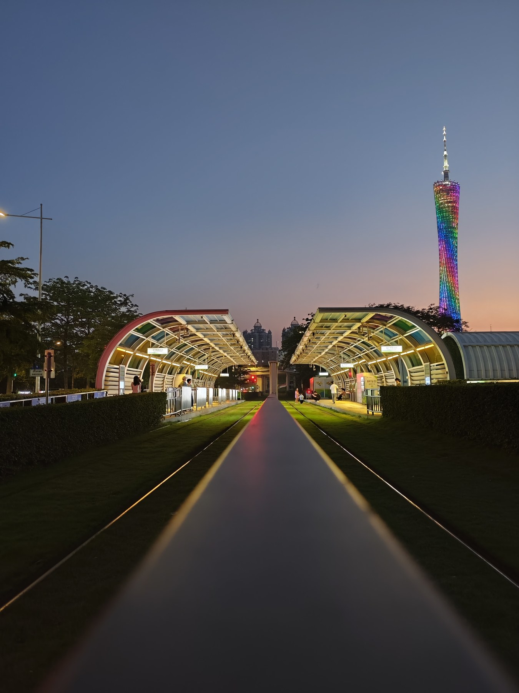
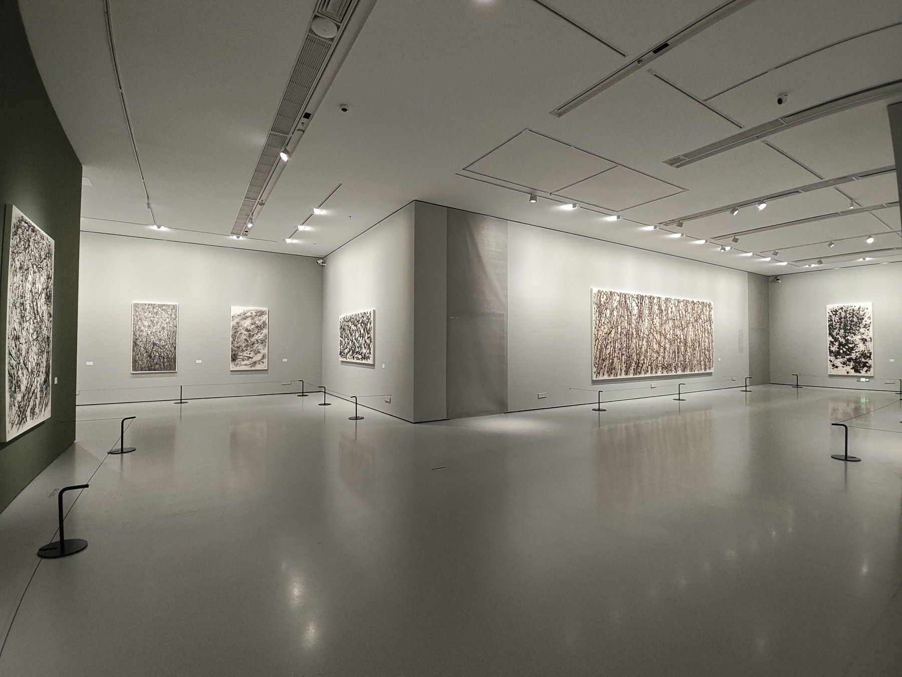
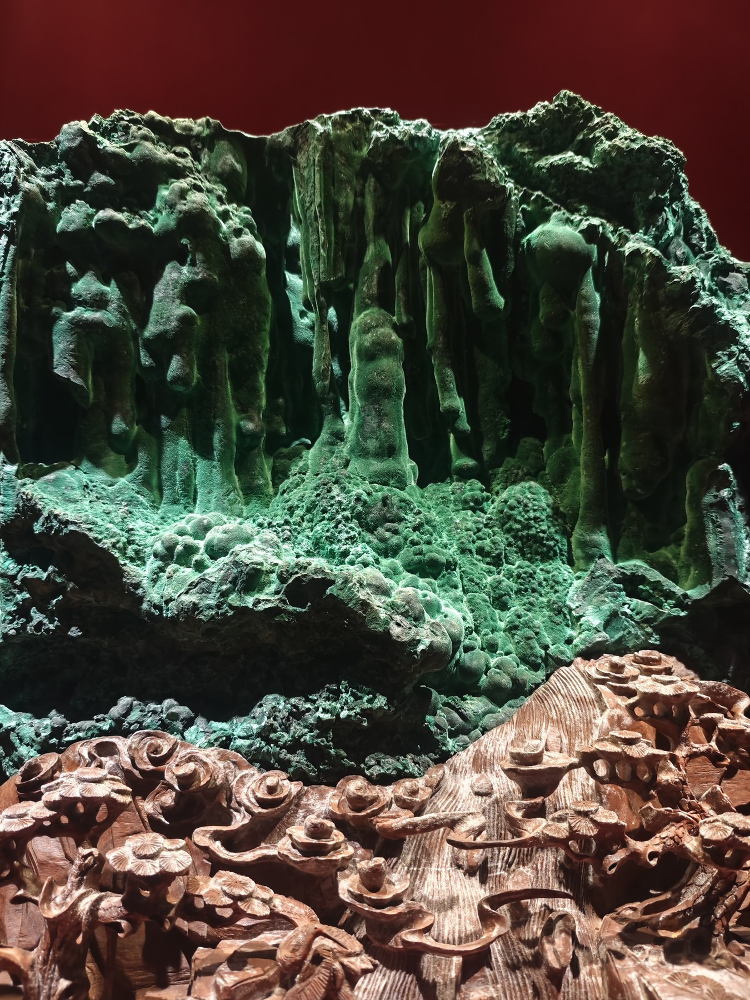
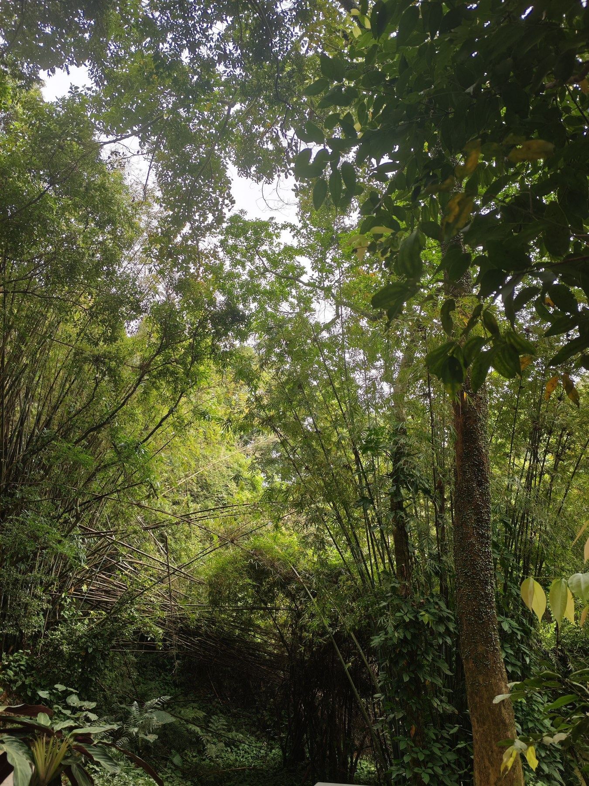
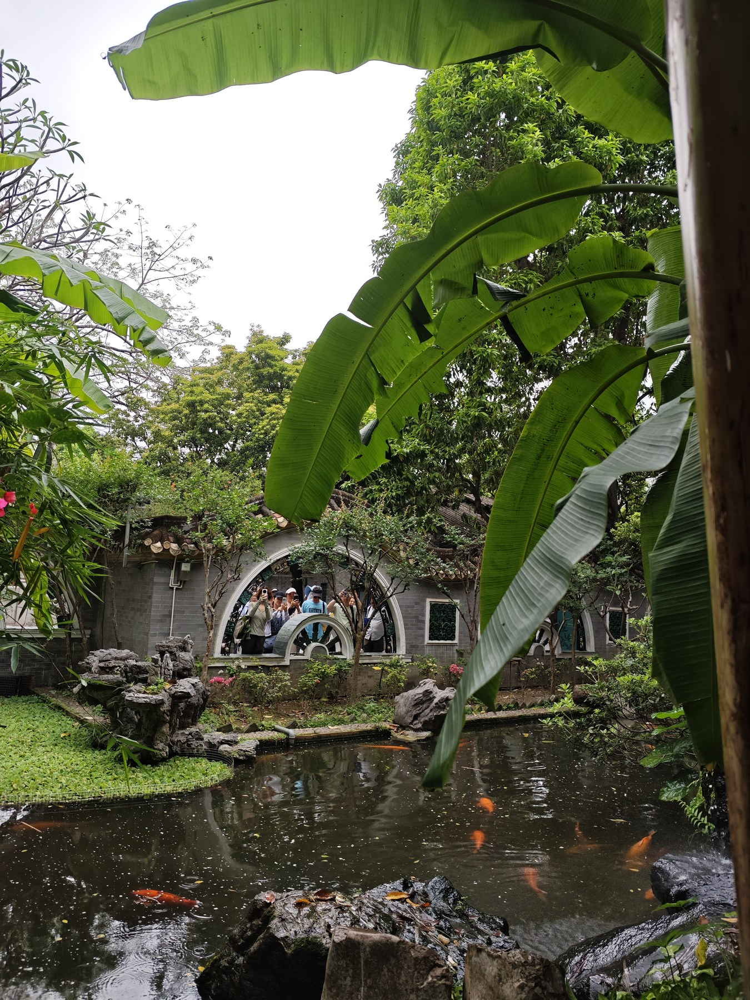
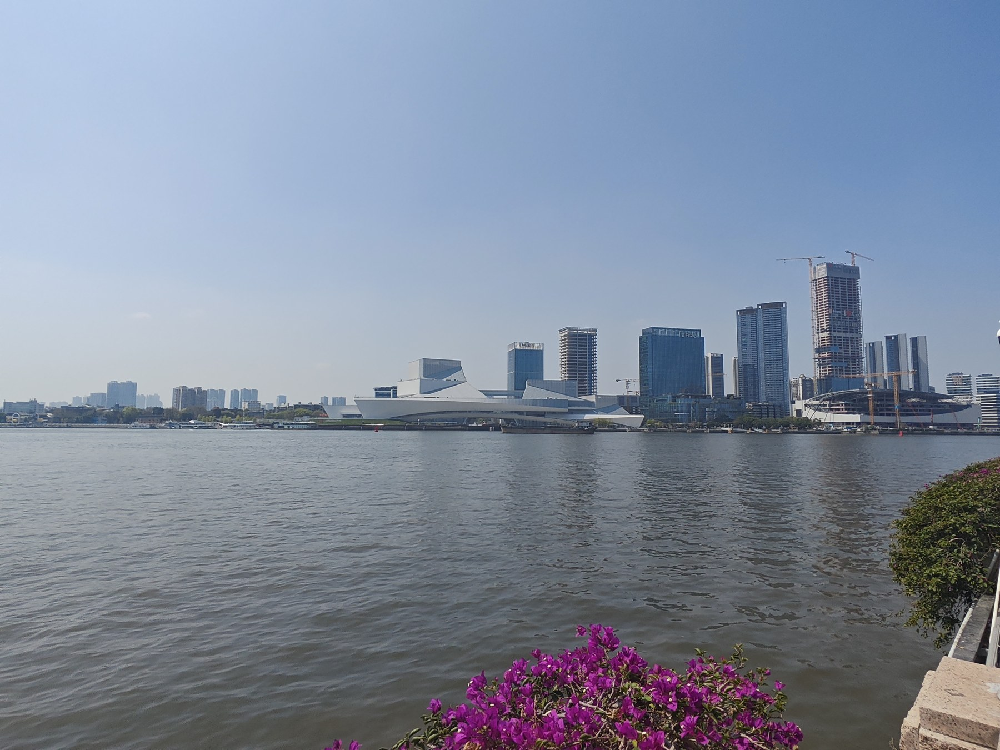
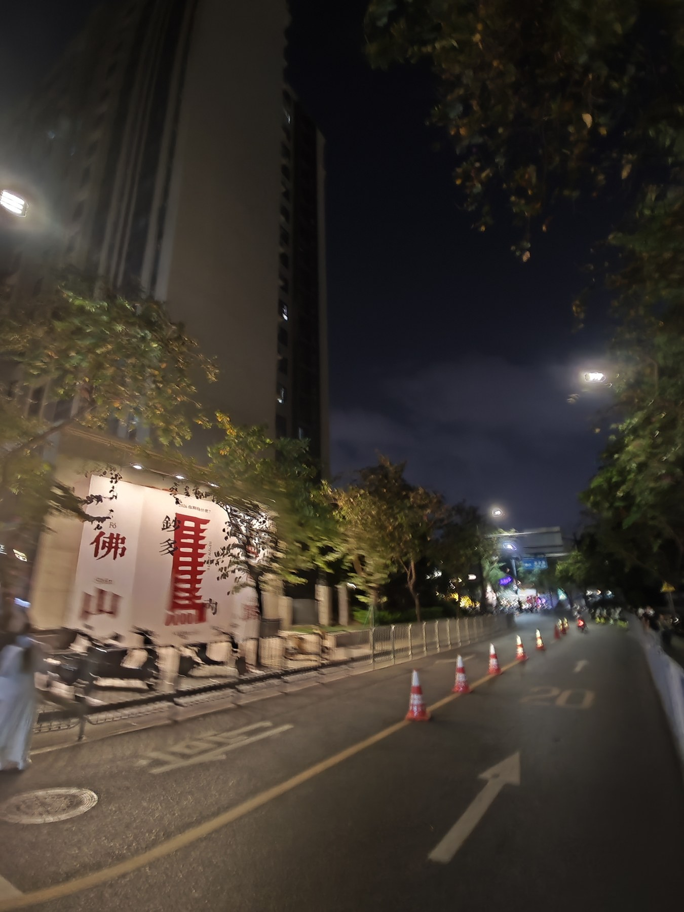

Route A / 宇宙系统感
我正在建立自己的 AI × 内容 × 组织成长系统。
这条路线最接近你现在的星空主页：强调未来感、系统感、长期成长。它适合做最终首页的主基调。
AI 工作流把工具放进真实流程，而不是只展示会用。
内容产品把表达变成能传播、能复盘的作品。
组织成长从销售和校园市场走向长期协作能力。



适合保留为最终首页的主视觉。
优势是记忆点强、和你之前的星空方向一致；风险是如果文字不够具体，会显得玄。所以这条路线必须搭配真实作品和证据。
WORK 01
个人介绍系统
把经历、能力、审美、作品变成长期更新的公开入口。
WORK 02
AI 教程仓库
把复杂流程拆成新人可执行的安装和使用手册。
WORK 03
内容验证
用真实播放和反馈验证表达能力，而不是自我评价。
Route B / 城市观察者
我在真实世界里训练判断力。
这条路线更生活化、更像你本人：旅行、展馆、城市、夜路、现场感。它适合让主页不只是“能力报告”，而是有人的气息。
去现场不只在屏幕里学习，也从城市和人群里取材。
做记录把生活素材变成审美、文案和作品来源。
再输出把观察转成网页、图文、视频和系统。

路径成长不是口号，是一次次走出去。
安静保留审美和感知力。
城市理解人群、商业和场域。
夜路把想法带回行动。适合作为最终网站的中段气质层。
优势是真实、有生活、有记忆点；风险是如果放太多，会变成相册。所以它应该服务叙事：城市观察、成长路径、作品素材来源。
Route C / 文字宣言型
我不想只做一个会用工具的人。
这条路线最像 Typewolf 的文字秩序：少图、强文字、强判断。它适合提升高级感，也适合解决你说的“文字太单薄”。
输入不是目的，输出和反馈才是成长真正发生的地方。
作品不是装饰，它是抽象能力变成可见结果的证据。
我希望无论进入任何组织，都能带着自己的系统离开。
适合作为最终网站的文案骨架。
优势是高级、清晰、有记忆点；风险是如果全站都这样，会显得太冷。所以它要和 Route A 的视觉、Route B 的生活素材融合。